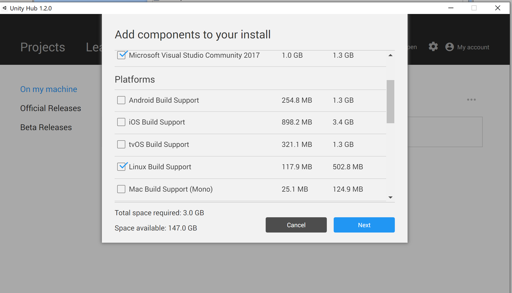
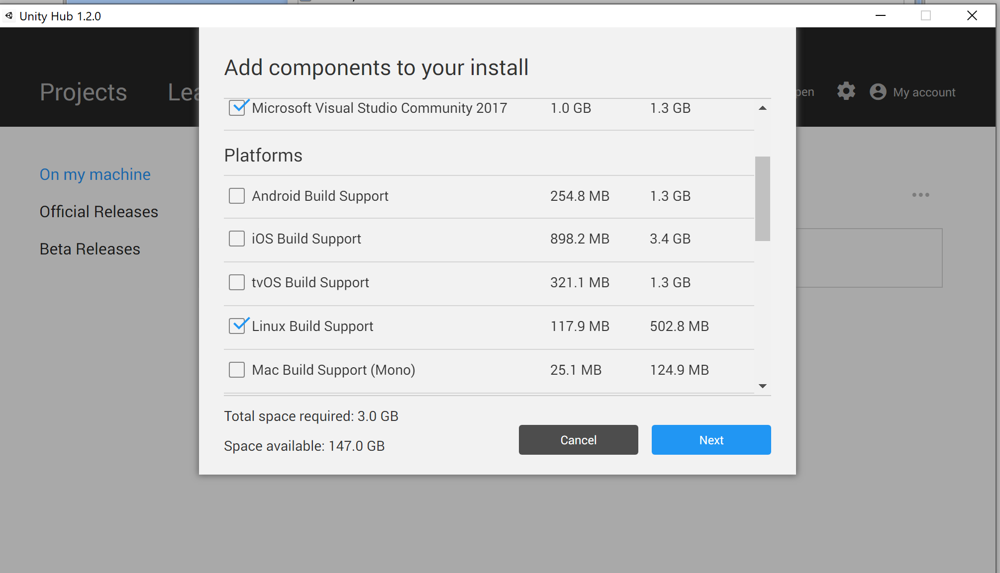

AirSim on Unity#
- AirSim on Unity allows you to run your simulators in the Unity Engine. This project comes with some sample Unity projects and a wrapper around the AirLib library to run as a native plugin in Unity.
- Included are two basic Unity Projects, one for a Car simulator and another for a Drone simulator. They are meant to be lightweight, and can be used to verify your setup is correct.
- Check out the Unity blogpost for overview on the release.
Warning: Experimental Release#
This project is still in early development, expect some rough edges. We are working to fully support the full AirLib API and feature set, but some things may be missing. Click here for the list of currently supported APIs.
Windows#
Building from source#
Install Unity#
- Download Unity Hub from this page.
- Install Unity 2019.3.12 using the Unity Hub from here. Detailed instructions here.
- Note: If you are using Unity for the first time, check out the Getting started guide. The Unity User Manual has additional tips, resources, and FAQs.
Build Airsim#
-
Install Visual Studio 2019. Make sure to select Desktop Development with C++ and Windows 10 SDK 10.0.18362 (should be selected by default) while installing VS 2019.
-
Start
x64 Native Tools Command Prompt for VS 2019. - Clone the repo:
git clone https://github.com/Microsoft/AirSim.git, and go the AirSim directory bycd AirSim. - Run
build.cmdfrom the command line.
Build Unity Project#
- Go inside the AirSim\Unity directory:
cd Unity. - Build the unity project:
build.cmd. - Additionally, there is a free environment
Windridge Citywhich you can download from Unity Asset Store. And, of course, you can always create your own environment.
Linux#
Dependencies#
sudo apt-get install libboost-all-devDownload and Install Unity for Linux#
Warning: Unity Editor for Linux is still in Beta. Expect some rough edges.
Install Unity#
- Download Unity Hub from this page.
- Install Unity 2019.3.12 using the Unity Hub.
- Note: If you are using Unity for the first time, check out the Getting started guide. The Unity User Manual has additional tips, resources, and FAQs.
Build Airsim#
git clone https://github.com/Microsoft/AirSim.git;
cd AirSim;
./setup.sh;
./build.shGenerate AirsimWrapper Shared Library#
cd AirSim/Unity
./build.shThis will generate the necessary shared library and copy it to the UnityDemo Plugins folder.
Usage#
- Start Unity Hub, click on
Projectson left pane, and then click on theAddbutton - Select the folder
AirSim\Unity\UnityDemo, and then hit theOKbutton. - Click on the new project which showed up in the Unity Hub menu to open it in Unity.
- In the bottom pane, click on
Projects->Assets->Scenes. Then, Double-click onSimModeSelector. This will load the SimModeSelector scene into the scene hierarchy pane. DO NOT add CarDemo or DroneDemo scene into the scene hierarchy pane. - Hit the play button to start the simulation (and hit play again to stop the simulation. .
- Alternatively, you can change the SimMode in your
Settings.jsonfile. (You can read more aboutSettings.jsonhere) - Controlling the car:
UseWASDor theArrow keysor the AirSim client. - Controlling the drone:
Keyboard control is not currently available for drone flight. - Changing camera views:
Keys0,1,2,3are used to toggle windows of different camera views. - Recording simulation data:
Press Record button(Red button) located at the right bottom corner of the screen, to toggle recording of the simulation data. The recorded data can be found atDocuments\AirSim\(Date of recording)on Windows and~/Documents/AirSim/(Date of recording)on Linux.
Building Custom Environments For AirSim#
To use environments other than UnityDemo, follow the instructions written here
Cross-Compiling to Linux#
Unity Editor supports compiling projects to Linux systems. After following the steps to build AirSim and Unity on Windows, do the following:
Linux Pre-Requisites#
Before being able to run Unity Binaries with the Airsim plugin, be sure have airsim and airsim unity built on your linux machine by following the Linux build steps above.
Package UnityDemo Binary On Windows#
Install Necessary Components#
In order to package your project for linux, the Linux Build Support Unity add-on must be installed.
* Open Unity Hub, and click the Add component button in the dropdown window under more options to the right of your Unity 2018.2.15f1 tab.
 * Make sure the Linux Build Support Platform is selected

Once this component is successfully installed, you are ready to build Unity Projects for Linux!
* Make sure the Linux Build Support Platform is selected

Once this component is successfully installed, you are ready to build Unity Projects for Linux!
Build the Project#
- On your Windows machine, build the Unity Demo by navigating to the build settings option in the toolbar
File -> Build Settings - Make sure the following scenes are set to be built:
- SimModeSelector
- CarDemo
- DroneDemo
- Set the target operating system to linux, and choose the version appropriate for your system (x86 vs x86_64)
- Click
Build - Transport the built project as well as the generated folder
"{project_name}_Data"to your linux machine
Copy The AirsimWrapper Library to the Project Plugins folder#
- On your linux machine, navigate to your AirSim repository, and run the following commands in a terminal window:
This will generate the necessary shared library to allow Airsim to communicate with Unity and copy it to the plugins folder of your project binary.cp Unity/linux-build/libAirsimWrapper.so path/to/your/project/{project_name}_Data/Plugins/{os_version}
Run the Project Binary#
- Open a terminal and navigate to your project directory
- Set your project binary as an executable file:
chmod +x "{project_name}.{configuration}" - Run the binary file
./{project_name}.{configuration}
Using Airsim API#
- For quickstart with the Python APIs for the car or the drone, simply run the
hello_car.pyor thehello_drone.pyscript accordingly. - Details of the AirSim C++ and Python APIs are here.
Acknowledgements#
- The drone object was provided by user 31415926 on sketchfab. It is licensed under the CC License.